Pipeline Configuration
Pipelines are sequences of stages that are performed on graphics hardware to perform a certain task, like rendering or computing. In RHI, we have two kinds of pipeline: graphics pipeline and compute pipeline. The following diagram shows these two kinds of pipelines:

Most pipeline configurations are stored in pipeline state objects (PSO), represented by IPipelineState. The graphics and compute pipeline state objects share the same interface type, but are created using different functions: IDevice::new_graphics_pipeline_state(desc) and IDevice::new_compute_pipeline_state(desc). Besides pipeline state objects, some pipeline configurations are encoded in command buffers directly (like viewport sizes, scissor rect sizes, blend factors, etc.) and can be set by corresponding command buffer functions.
Graphics pipeline
Graphics pipeline are used to perform render tasks, with draws primitives (points, lines, triangles) to texture attachments. One graphics pipeline has the following stages:
- Input Assmbler, which reads data form vertex buffers and optionally index buffer to build a list of vertices to be processed.
- Vertex Shader, which is a programmable function that will be called on every vertex to process the vertex data.
- Rasterizer, which performs primitive rasterizing to generate pixels from geometries. The vertex shader outputs will be rasterized to every pixel as pixel shader inputs using linear interpolation.
- Pixel Shader, which is a programmable function that will be called on every generated pixel to compute the final color that will be drawn to destination attachments.
- Depth Stencil Testing, which performs depth tests and stencil tests to discard pixels if they do not pass such tests. This stage also updates the depth stencil attachment value if depth and/or stencil write is enabled.
- Color Blending, which performs blending between the existing data on color attachments and the new color outputted by pixel shader, then writes the blend result to color attachments.
Most configurations are done by filling GraphicsPipelineStateDesc descriptor, then call IDevice::new_graphics_pipeline_state(desc) with the descriptor to create a graphics pipeline state object. When recording render commands, call ICommandBuffer::set_graphics_pipeline_state(pso) to bind the pipeline state object to the pipeline, then all configurations in the pipeline state object will apply to succeeding draw commands until another PSO is bind, or until the render pass is ended.
Input assembler
Input assembler reads the vertex buffers and index buffer to generate vertices that will be processed on succeeding stages. Input assembers are configured by the input_layout property of GraphicsPipelineStateDesc, which includes input bindings configuration (InputBindingDesc) and input attributes configuration (InputAttributeDesc).
Input bindings describe vertex buffers that are attached to the pipeline, including the binding slot of the vertex buffer, the size of elements in the vertex buffer, and the input rate of the vertex buffer (per vertex or per instance). The user should specify one input binding for every vertex buffer bound to the pipeline. Input attributes describe vertex attributes, including the format of the attribute, the semantic name and semantic index of the attribute, the location of the attribute, the binding slot of the vertex buffer that provides the attribute, and the byte offset of the attribute from the beginning of the element. The following diagram shows one comprehensive input assembler setup, where we provide vertices data using one vertex buffer, and provide instance data using two vertex buffers to draw the geometry multiple times using different color and transform information:

Vertex shader
Vertex shaders are user-defined functions that are called on every vertex outputted from input assembler. One vertex shader must have a four-component vector output attribute with SV_POSITION semantics that will be used as the vertex position for succeeding stages. The outputted vertex position is interpreted in normalized device coordinates (NDC), as shown below. If the fourth component (w) of the outputted vertex position is not 1.0, the system divides each component of the vertex position with w to normalize it internally.

Note that the depth value starts from 0.0, not -1.0.
Rasterizer
Rasterizer generates pixels that will be used by pixel shaders from vertices outputted from vertex shaders. A traditional implementation of rasterizer performs the following tasks in order:
- Primitive generation: Generates primitives (points, lines or triangles that will be drawn) from vertices stream based on the primitive topology settings of the pipeline state (configured by
GraphicsPipelineStateDesc::primitive_topology). - Covering test: Performs covering test for every pixel position against every primitive to see if the pixel is covered by the primitive. If MSAA is enabled, the covering test will be performed on every sub-pixel instead of every pixel.
- Pixel list generation: For every primitive, generate a list of pixels that are covered by the primitive. If MSAA is enabled, one pixel will be included in the list if any of its sub-pixels is covered by the primitive.
- Depth bias: If depth bias is used, offsetting depth values for primitives.
- Attribute interpolation: For every primitive, fill pixel shader input data for every pixel in the list by linear interpolating attributes outputted from the vertex shader.
Rasterizers are configured by the rasterizer_state property of GraphicsPipelineStateDesc, which has the following properties:
fill_mode: if the primitive type is triangle, controls the full mode of the rasterizer. Possible options include:wireframe: only pixels close to the border of the triangle will pass covering test.solid: all pixels in the triangle will pass covering test.
-
cull_mode: if the primitive type is triangle, controls the cull mode of the rasterizer. Possible options include:front: cull out pixels in the front face of the triangle.back: cull out pixels in the back face of the triangle.none: do nothing.
The front face and back face of one triangle is determined by the winding order of three triangle vertices in NDC (looking from -Z to +Z) and
front_counter_clockwiseproperty ofRasterizerDesc. 1.front_counter_clockwise: If this istrue, the rasterizer will regard one triangle as front-facing if its three vertices are wound in counter clockwise order; if this isfalse, the rasterizer will regard one triangle as front-facing if its three vertices are wound in clockwise order. 1.depth_clip_enable: If this istrue, the rasterizer will discard pixels whose depth value (zcomponent of position after divided byw) goes beyond ; if this isfalse, the rasterizer will clamp the depth value of pixel to1.0if it is greater than1.0, and retain the coverage value, which may cause depth test produce incorrect results. 1.depth_bias,slope_scaled_depth_biasanddepth_bias_clampare used to compute one depth bias value that will be added to the original depth value in depth bias step. The depth bias value is computed as:where:
- is the original depth of the pixel.
-
is
depth_biasconverted tof32. -
is a small number that represents the minimum representable value > 0 in the depth stencil attachment format converted to
f32:- If the depth stencil attachment is in a normalized format (
unorm), , where is the number of precision bits of the attachment format, for example, ford16_unorm. - If the depth stencil attachment is in a floating-point format (
float), , where is the exponent of the maximum original depth value of the input primitive, and is the number of bits in the floating-point mantissa, for example, ford32_float.
- If the depth stencil attachment is in a normalized format (
-
is
slope_scaled_depth_bias. - is the slope of the depth value at pixel position, usually computed as .
- and is the horizontal and vertical slopes of the depth value at the pixel position.
-
is
depth_bias_clamp.
Note that different platforms may implement depth bias using slightly different formula and precision, so the user should not expect a exact bias number between different platforms and graphics API.
Viewports and scissor rects
Viewports defines viewport transformation, which transforms positions in NDC to screen coordinates. Every viewport defines six properties: top_left_x, top_left_y, width, height, min_depth and max_depth.
1. top_left_x and top_left_y defines the position, in pixels, of the top-left point of the viewport relative to the top-left corner of the frame buffer.
1. width and height defines the size, in pixels, of the viewport.
1. min_depth and max_depth defines the valid depth value of outputted vertex position in NDC. Both value must in range [0.0, 1.0], but min_depth can be equal to or greater than max_depth. Any pixel whose depth value go beyond this range will be clamped to the range.
The viewport transformation is performed using the following formulas:
where: 1. is the vertex position in NDC. 1. and Z_{screen}$ is the depth value written to the depth buffer.
After viewport transformation, scissor culling will be performed to discard pixels that go outside of the scissor rect. The scissor rect is defined by one RectI structure, while has the following components:
1. offset_x: The X offset, in pixels, of the scissor rect relative to the top-left corner of the frame buffer.
1. offset_y: The Y offset, in pixels, of the scissor rect relative to the top-left corner of the frame buffer.
1. width: The width, in pixels, of the scissor rect.
1. height: The height, in pixels, of the scissor rect.
Viewports and scissor rects are set dynamically in command recording by ICommandBuffer::set_viewport(viewport) and ICommandBuffer::set_scissor_rect(rect). The user may also set multiple viewports and scissor rects for one draw call by calling ICommandBuffer::set_viewports(viewports) and ICommandBuffer::set_scissor_rects(rects), in such case, the viewport array and scissor rect array must have the same size so that every viewport will have one corresponding scissor rect. Every primitive generated by the rasterizer can only be sent to one viewport, the user can use SV_ViewportArrayIndex (uint) vertex shader output semantics to select which viewport to use. All vertices in the same primitive should choose the same viewport, or the behavior is not defined. If SV_ViewportArrayIndex is not specified, the first viewport and scissor rect will be used.
Pixel shader
Pixel shaders (or fragment shaders in some graphic APIs) are user-defined functions that are called on every pixel outputted from rasterizer whose coverage value is greater than zero. One pixel shader must have one output attribute with SV_COLOR{N} semantic for every color attachment of the render pass with correct type regarding to the format of the corresponding color attachment. Attribute values outputted from the vertex shader will be interpolated into every pixel and used as input attribute value of pixel shaders.
Depth stencil testing
Depth stencil testing stage performs depth and stencil tests on pixels outputted from the pixel shader and discards pixels that do not pass such tests, one pixel will be written to the attachment only if it passes both depth and stencil test. The depth test is usually used to ensure that pixels near the camera will not be covered by pixels far from the camera if they are rastered to the same screen position, even if the closer pixel is drawn first.
Depth stencil testing stage is configured by depth_stencil_state property of GraphicsPipelineStateDesc, which has the following properties:
depth_test_enable: Whether to enable the depth test. If depth test is disabled, all pixels will pass the depth test. This must be set tofalseif depth stencil attachment is not specified.depth_write_enable: Whether to write pixel depth value to the depth buffer if the pixel passes both depth and stencil test. This must be set tofalseif depth stencil attachment is not specified.depth_func: The depth test function.stencil_enable: Whether to enable the stencil test. If stencil test is disabled, all pixels will pass the stencil test.stencil_read_mask: The read mask that will be bitwise-AND combined with the value read from stencil buffer and the value of the pixel before they are used for stencil test.stencil_write_mask: The write mask specifying which bits of the value in the stencil buffer will be overwritten by the new pixel's stencil value.front_faceandback_faceare two stencil operation descriptors that allows the user to specify the stencil operation for front face and back face independently. The stencil operation descriptor has the following properties:stencil_func: The stencil test function.stencil_fail_op: The operation to perform on stencil buffer if the pixel fails to pass the stencil test.stencil_pass_op: The operation to perform on stencil buffer if the pixel passes the stencil test.stencil_depth_fail_op: The operation to perform on stencil buffer if the pixel passes the stencil test, but fails to pass the depth test.
The depth stencil test can be represented by the following presudo C++ code:
bool depth_test_pass = true;
auto pixel = read_pixel_shader_pixel_data();
// depth test
if (depth_test_enable)
{
f32 exist_depth = read_depth_from_depth_buffer();
depth_test_pass = depth_func(pixel.depth, exist_depth);
}
// stencil test
bool stencil_test_pass = true;
u8 stencil_value;
u8 stencil_write_value;
if (stencil_enable)
{
stencil_value = read_stencil_from_stencil_buffer();
u8 stencil_ref = get_stencil_ref(); // Set by ICommandBuffer::set_stencil_ref.
bool is_front_face = is_pixel_front_face(pixel);
if(is_front_face)
{
stencil_test_pass = front_face.stencil_func(stencil_ref & stencil_read_mask, stencil_value & stencil_read_mask);
if(stencil_test_pass == true)
{
if(depth_test_pass == true)
{
stencil_write_value = front_face.stencil_pass_op(stencil_value, stencil_ref);
}
else
{
stencil_write_value = front_face.stencil_depth_fail_op(stencil_value, stencil_ref);
}
}
else
{
stencil_write_value = front_face.stencil_fail_op(stencil_value, stencil_ref);
}
}
else
{
stencil_test_pass = back_face.stencil_func(stencil_ref & stencil_read_mask, stencil_value & stencil_read_mask);
if(stencil_test_pass == true)
{
if(depth_test_pass == true)
{
stencil_write_value = back_face.stencil_pass_op(stencil_value, stencil_ref);
}
else
{
stencil_write_value = back_face.stencil_depth_fail_op(stencil_value, stencil_ref);
}
}
else
{
stencil_write_value = back_face.stencil_fail_op(stencil_value, stencil_ref);
}
}
}
// discard pixel if failed to pass the depth stencil test.
if(depth_test_pass == false || stencil_test_pass == false)
{
discard(pixel);
}
else
{
if(depth_write_enable)
{
write_depth_to_depth_buffer(pixel.depth);
}
}
// update stencil buffer. This will be performed even if the pixel is discarded.
if(stencil_enable)
{
// only modify bits specified by the write mask.
write_stencil_to_stencil_buffer((stencil_write_value & stencil_write_mask) | (stencil_value & ~stencil_write_mask));
}
Color blending
Color blending stage performs color blending between pixel colors outputted from pixel shader and pixel colors on the color attachment, and writes the blending result to the color attachment. Color blending stage is configured by blend_state for GraphicsPipelineStateDesc, which has the following properties:
1. attachments: Specify the color blending settings for every color attachment. Every attachment blend setting is described by AttachmentBlendDesc, which has the following properties:
1. blend_enable: Whether to enable blending for this attachment. Disabling blending behaves the same as setting blend_op_color to add and setting the source and destination blending factor for both color and alpha components to 1.0 and 0.0.
1. src_blend_color: The blend factor for source color components (RGB).
1. dst_blend_color: The blend factor for destination color components (RGB).
1. blend_op_color: The blend operation for color components (RGB).
1. src_blend_alpha: The blend factor for the source alpha component (A).
1. dst_blend_alpha: The blend factor for the destination alpha component (A).
1. blend_op_alpha: The blend operation for the alpha component (A).
1. render_target_write_mask: Specify which color channels (RGBA) are written to the color attachment texture.
1. independent_blend_enable: If this is false, then all color attachments should use the same color blending settings specified by the first element of attachments array. If this is true, then each color attachment uses dedicated color blending setting specified by the corresponding elements of attachments array. Set this to false may improve performance on some platforms.
1. alpha_to_coverage_enable: On MSAA pipelines, if this is true, alpha to coverage feature is enabled. See "Multisample anti-aliasing" section for details about coverage mask. This must be false on non-MSAA pipelines.
The final written color for every color attachment is computed using the following equation:
where:
1. is the blend factor specified by src_blend_color.
1. is the blend factor specified by dst_blend_color.
1. is the blend operation specified by blend_op_color.
1. is the blend factor specified by src_blend_alpha.
1. is the blend factor specified by dst_blend_alpha.
1. is the blend operation specified by blend_op_alpha.
Multisample anti-aliasing
Multisample anti-aliasing (MSAA) is a hardware-accelerated anti-aliasing technique that relieve geometry aliasing artifacts. When MSAA is enabled, the render pipeline generates sample_count sub-pixels for every pixel, and performs rasterization, depth stencil test and color blending on every sub-pixel instead of every pixel. The pixel shader, however, is invoked only once for every pixel, and all sub-pixels in that pixel get the same output value from pixel shader.
To enable MSAA for one render pipeline, performs the following steps:
1. Use color and depth attachments with sample_count of TextureDesc greater than 1.
1. Set sample_count of GraphicsPipelineStateDesc to a value greater than 1.
1. Set sample_count of RenderPassDesc to a value greater than 1.
The sample count number must be equal for TextureDesc, GraphicsPipelineStateDesc and RenderPassDesc used in one MSAA draw.
Coverage mask
For every pixel in every primitive pixel list, the render pipeline generates a coverage mask that records the coverage result of every sub-pixel of that pixel. Every sub-pixel in one pixel takes one bit of the coverage mask, and that bit will be set to 1 if the sub-pixel passes coverage test and depth stencil test, and 0 otherwise. If alpha to coverage is enabled, the render pipeline will generate another coverage mask based on the alpha value of the first shader output color. The coverage mask generation algorithm is platform-specific, but should unset all bit if alpha is 0.0, set all bits if alpha is 1.0, and set a number of bits proportionally to the value of the floating-point input. That coverage mask will be bitwise-AND combined with the original coverage mask to compute the final coverage mask. The final coverage mask is used in color blending to determine which sub-pixels should be written back to the color and depth stencil buffer.
## Compute pipeline
Compute pipelines are used to perform arbitrary compute tasks, which is somethings referred as general-purpose GPU (GPGPU) programming. The compute pipeline only includes one stage: the compute shader stage, which runs user-defined compute tasks. Compute pipelines configurations are done by filling ComputePipelineStateDesc descriptor, then call IDevice::new_compute_pipeline_state(desc) with the descriptor to create a compute pipeline state object. When recording compute commands, call ICommandBuffer::set_compute_pipeline_state(pso) to bind the pipeline state object to the pipeline, then all configurations in the pipeline state object will apply to succeeding dispatch commands until another PSO is bind, or until the render pass is ended.
## Shaders Shaders are user-defined functions that can be invoked by GPU to perform certain tasks. In LunaSDK, we have the following shaders:
- Vertex shader, set by
GraphicsPipelineStateDesc::vs. - Pixel shader, set by
GraphicsPipelineStateDesc::ps. - Compute shader, set by
ComputePipelineStateDesc::cs.
All shaders are specified by providing shader binary data to the pipeline state descriptor when creating the pipeline state. The shader binary data has different formats in different backends:
- Direct3D 12 accepts DXBC (produced by
D3DCompileorfxc) or DXIL (produced bydxc) shader binary code. - Vulkan accepts SPIR-V shader binary code produced by
glslcordxc. -
Metal is a little bit complicated. Since some settings (like the entry point of the shader) are not recorded in the shader code, but in application side, we need to append additional parameters to the shader data. Metal accepts a JSON string that indicates one object with the following properties:
source(String): The MSL shader source code.entry_point(String): The name of the entry point function of the shader.numthreads(Array of integer): For compute shaders, specify the number of threads per thread group.
Currently, Metal shaders are compiled during the pipeline object creation process.